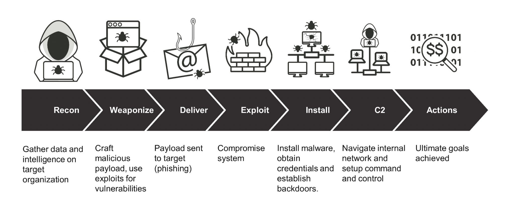

Your Tactical Playbook for Cybersecurity Incident Response
Introduction to Incident Handling
Incident handling (IH) has become an important part of an
organization's defensive capability against cybercrime. While
preventive measures reduce risk, a robust incident handling capability
is undeniably essential for any organization that cannot afford a
compromise in data confidentiality, integrity, or availability.
Key Definitions
Event: An action occurring in a system or network
(e.g., user sending email, firewall allowing connection).
Incident: An event with negative consequences
(e.g., system crash, unauthorized data access). Examples include
data theft, financial theft, unauthorized access to data, and
installation of malware.
Incident Handling: A clearly defined set of
procedures to manage and respond to security incidents in a computer
or network environments.
Incident handling isn't limited to intrusion incidents alone. Other
types of incidents, such as those caused by malicious insiders,
availability issues, and loss of intellectual property, also fall
within its scope.
Incident Handling's Value
The objective of incident handling teams is to minimize the theft of
information or the disruption of services by performing
investigations and remediation steps systematically. The decisions
taken before, during, and after an incident will affect its impact.
One of the most widely used resources is NIST's Computer Security
Incident Handling Guide, which provides practical guidelines on
responding to incidents effectively.
The Cyber Kill Chain
Understanding the attack lifecycle (cyber kill chain) provides
valuable insights about how far in the network an attacker is and what
they may have access to during investigation.
1. Reconnaissance
Attackers gather information through passive methods (LinkedIn,
company websites) or active scanning of external applications and
IP addresses.
2. Weaponization
Malware is developed and embedded into an exploit or deliverable
payload, often tailored to bypass specific defenses based on recon
information.
3. Delivery
The payload is delivered via phishing emails (attachments or
links), malicious websites, or physical media like USB drives.
Often only requires a double-click from the victim.
4. Exploitation
The payload is triggered to execute code on the target system,
attempting to gain access or control.
5. Installation
Malware often achieves persistence using droppers, backdoors, or
rootkits. Common techniques include using lightweight initial
stagers that load additional tools on demand.
6. Command & Control
Attacker establishes remote access to the compromised system,
often using modular approaches to maintain multiple access points.
7. Actions on Objectives
Attacker achieves their final goal - data exfiltration, ransomware
deployment, or other malicious objectives.

Figure 1: The Cyber Kill Chain framework
Our primary objective is to
stop an attacker from progressing further up the kill
chain, ideally in one of the earliest stages (reconnaissance,
weaponization, or delivery).
Adversaries often repeat stages (like returning to reconnaissance
after initial installation) to move deeper into networks.
Incident Handling Process
The NIST Computer Security Incident Handling Guide outlines four key
stages:
1. Preparation
Establish incident handling capability and implement protective
measures:
Incident handlers spend most time in preparation and detection &
analysis stages. The process is cyclic - as new evidence is
discovered, next steps may change.
The two main activities are investigation (discover
patient zero, determine tools used, document compromised systems)
and recovery (create and implement recovery plan).
Preparation Stage
The foundation of effective incident handling begins long before any
incident occurs. Proper preparation involves two key objectives:
1. Establishing Incident Handling Capability
Preparation prerequisites include:
Skilled team members: Either in-house or
outsourced, but basic capability must exist internally
Trained workforce: Security awareness for all
employees
Clear policies and documentation: Including:
Contact information for all relevant parties (legal, management,
IT, law enforcement)
Incident response policy, plan, and procedures
System and network baselines
Network diagrams and asset management database
Emergency privileged accounts
Tools and equipment: Including:
Forensic workstations
Digital forensic tools
Memory analysis tools
Log analysis tools
Network capture tools
Physical tools (write blockers, hard drives, cables)
Jump bag with essential tools ready to go
2. Protective Measures
Key security controls to prevent incidents:
DMARC: Email protection against phishing (built on
SPF and DKIM)
Endpoint Hardening:
Disable LLMNR/NetBIOS
Implement LAPS and remove admin privileges
Configure PowerShell in "ConstrainedLanguage" mode
Test new YARA rules against benign files first to avoid false
positives. The -w flag in YARA CLI suppresses
warnings.
Important: Use connection protocols that don't cache credentials
when investigating potentially compromised systems (e.g., WinRM).
Tools like PsExec can cache credentials if not used carefully.
During data collection, minimize system interaction to preserve
evidence. Memory forensics is becoming increasingly important for
advanced attacks.
Run this with constrained language mode (-ExecutionPolicy Bypass -ConstrainedLanguage) to prevent script block logging from alerting attackers.
Eradication
Eliminating root causes and attacker presence:
Malware removal
System rebuilding
Backup restoration
Additional patching
Network-wide hardening
Recovery
Restoring normal operations with enhanced monitoring:
Business verification of system functionality
Heavy logging and monitoring for:
Unusual logons
Unusual processes
Malware-like registry changes
Phased approach for large incidents
Important: Containment actions must be coordinated across all
systems simultaneously to avoid alerting attackers. Patching alone
doesn't mean the incident is over - eradication and recovery must
follow.
Deep Dive: Colonial Pipeline Attack Response
Critical InfrastructureRansomwareMay 2021
Incident Snapshot
0+
Pipeline shutdown (days)
$0
Ransom paid (million)
0
States affected
Approximately 90% of the ransom was recovered through blockchain
analysis.
Containment (First 48 Hours)
Shut down 5,500-mile pipeline within 4 hours
Disabled all VPN access (including unused legacy accounts)
Fully segmented IT and OT networks
Recovery (Days 3-14)
Physical Verification: Manual safety checks at
73 pumping stations
Staged Restart: 20% → 50% → 100% capacity over
4 days
Systems: Billing rebuilt from clean backups
with enhanced monitoring
Full operational recovery took 2 weeks after systems were
technically restored.
Action: Define physical process RTOs separate
from IT systems
Post-Incident Activity Stage
This stage focuses on documenting incidents and improving future
response capabilities through lessons learned. It gives us the
opportunity to reflect on the threats by examining what occurred, what
we did, and how our actions and responses performed.
Practical Example: Memory Forensics
Memory analysis helps with root cause analysis. Critical for:
Identifying attacker techniques after system reboot
Finding evidence of fileless malware
Validating eradication completeness
Python script for memory analysis using Volatility
import volatility.conf as conf
import volatility.registry as registry
import volatility.plugins.taskmods as taskmods
import volatility.plugins.malware.malfind as malfind
defanalyze_memory(memory_dump):
# Basic memory analysis with Volatility
registry.PluginImporter()
config = conf.ConfObject()
config.PROFILE = "Win10x64"
config.LOCATION = "file://" + memory_dump
# Example analysisprint("[*] Running pslist...")
for proc in taskmods.PSList(config).calculate():
print(f"Process: {proc.ImageFileName} (PID: {proc.UniqueProcessId})")
# Check for hidden processesprint("\n[*] Checking for hidden processes...")
for proc in malfind.Malfind(config).calculate():
if proc:
print(f"[!] Potential malware found in process: {proc[0].ImageFileName}")
Forensic Tip:
Always capture memory before disconnecting systems. Use
winpmem or Belkasoft RAM Capturer for
reliable acquisition.
Reporting
The final report is a crucial part of the entire process. A complete
report will contain answers to questions such as:
What happened and when?
Performance of the team dealing with the incident
Did the business provide the necessary information promptly?
What containment and eradication actions were implemented?
What preventive measures should be put in place?
What tools and resources are needed for future incidents?
Incident reports provide measurable results and serve as references
for handling future events. In situations where legal action is to
be taken, an incident report will also be used in court.